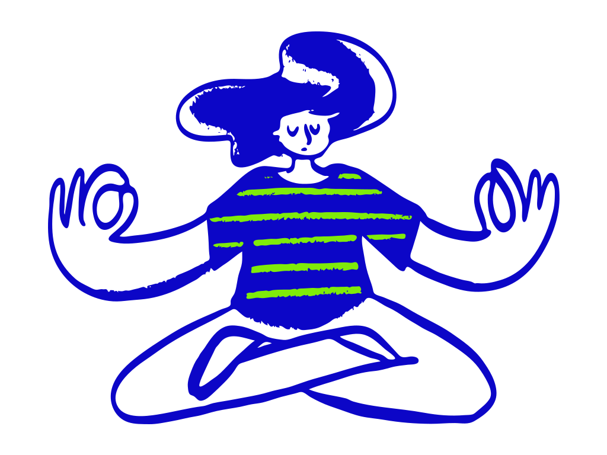

<section class="container">
    <div class="row">
        <div class="col-md-6 py-3">
            <div class="about-content">
                <h2 class="text-blue font-weight-bold">Nice to meet you!</h2>
                <p class="mt-5">Hi! I'm Marta, a Frontend engineer or developer or designer wannabe based in Barcelona
                    who loves to
                    learn and
                    take part of creative and challenging projects. I enjoy developing intuitive APIs with and efficient
                    UX/UI
                    implementations.<i class="far fa-flushed"></i></p>
                <p>I started studying graphic design at EINA and a few years later I realized that the web development
                    is more
                    satisfying and fulfill than graphic design and then I started a long path as self-taught web
                    development. A few
                    months ago, I continued to expand my knowledge and skills in the intensive 4-months course at
                    Barcelona Activa.
                </p>
                <p>So, here I am.</p><i class="far fa-angry"></i>
            </div>
        </div>
        <div class="col-md-6 py-3 d-flex justify-content-end align-items-end">
            
        </div>
    </div>

</section>